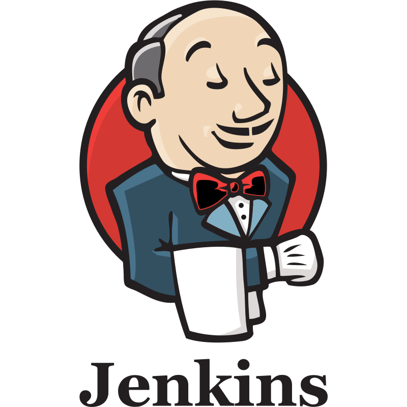

About Me
I like to
I am a professional with a passion for solving complex problems. I specialize in automating infrastructure, continuous integration, and system monitoring. Proficient in networking, Linux, Python, and cybersecurity, I design and implement secure, scalable IT solutions that optimize operations and drive efficiency. Passionate about solving complex challenges in cloud environments, I am eager to leverage my skills in collaborative projects that foster innovation and growth. Outside of work, I stay focused through kickboxing, Brazilian Jiu-Jitsu, and cycling, while exploring new technologies through amateur radio and homelab projects. This blend of professional focus and personal curiosity keeps me on the cutting edge of technology and innovation.
Download ResumeExperience
DevOps Engineer
Engineered and optimized CI/CD pipelines using GitHub Actions and GCP Cloud Build, reducing deployment times across multiple cloud environments. Architected cloud-native IaC solutions with Terraform across AWS and GCP, covering secure VPC design, hybrid cloud connectivity, and modular reusable components for standardized provisioning. Designed and implemented Kubernetes infrastructure (GKE + self-managed clusters) with Horizontal Pod Autoscaler (HPA) and cluster auto-scaling to optimize resource allocation and reduce costs. Developed comprehensive monitoring, logging, and alerting systems using Prometheus, Grafana, AWS CloudWatch, and Google Cloud Operations Suite for proactive incident detection. Established AWS disaster recovery architectures and automated on-premises to cloud migrations, ensuring compliance with RPO and RTO requirements.
IT Support Analyst
Improved visibility and incident response times by implementing ELK Stack and Grafana for logging and monitoring. Optimized cloud orchestration with Terraform and Ansible across AWS and GCP environments, including EKS, VPC, EC2, and Route53. Integrated Jira with GitHub for project tracking, automated security monitoring with Nexus IQ, and maintained code quality via SonarQube and Jenkins. Automated Linux server deployments and reduced machine downtime by 15% using Prometheus and Grafana. Enhanced threat detection and vulnerability management with AI-powered CrowdStrike, Stellar Cyber XDR, and Tenable.sc.
System Administrator
Hardening devices and systems through least-privilege account assignments, disabling unused services, enforcing encryption, and implementing robust password policies.
Education
Cambrian College of Applied Art & Science
Business Analytics
University of Port-Harcourt
Computer Science
Skills
Programming Languages & Tools
 Linux
Linux
 Python
Python
 JavaScript
JavaScript
 AWS
AWS
 Terraform
Terraform
 Ansible
Ansible
 GitLab
GitLab
 Docker
Docker
 Kubernetes
Kubernetes

JenkinsCertifications
-
Linux Foundation: Kubernetes Certified Administrator
-
Amazon Web Services: Solutions Architect
-
Red Hat: Certified System Administrator
-
SAFe Agile: Scrum Master
Projects
Resona
A complete ecosystem for automating resume customization specifically for LinkedIn job applications using AI.
Project Overview
Resona is a smart resume tailoring platform designed to help job seekers optimize their resumes for LinkedIn job postings. It features a lightweight Chrome extension for seamless integration with LinkedIn, a full-featured web dashboard for user management and resume handling, and a high-performance backend API.
Complete User Flow
- Seamless Integration: Chrome extension injects "Tailor Resume" buttons directly into LinkedIn job pages.
- AI Tailoring: Backend leverages GPT-4o-mini to analyze job descriptions and customize resume content.
- Smart Caching: Redis-based caching system provides instant responses for repeated resume/job combinations.
- Subscription Model: Integrated Stripe payment flow for upgrading from free to premium tiers.
- Secure API: Token-based authentication with 64-character secure random tokens and rate limiting.
Architecture & Tech Stack
The system is deployed using a scalable production architecture featuring Cloudflare CDN, AWS Application Load Balancer, and a Redis cluster for high availability.
Azure Nuke
A powerful CLI tool for scanning and cleaning up Azure resources.
Project Overview
Azure Nuke is a CLI tool I developed to manage and clean up Azure cloud resources efficiently. The tool helps organizations scan for unused resources, enforce tagging policies, and safely delete resources that are no longer needed, reducing cloud costs and improving security posture.
Features
- Comprehensive scanning of Azure resources across subscriptions
- Safe deletion with confirmation prompts and dry-run mode
- Flexible filtering by resource type, region, and more
- Exclusion system to protect critical infrastructure
- Color-coded output for easy identification of actions and results
Technologies Used
Implementation Details
Implemented the tool using Python with the Azure SDK for comprehensive resource management. Created a configuration system that supports YAML-based exclusion rules to protect critical infrastructure. Designed the CLI interface to be intuitive with command groups for scanning and deletion operations.
# Example usage:
aznuke scan --profile production --region westus2
aznuke delete --checks storage,virtualmachines --dry-runHomelab Environment
Project Overview
A personal infrastructure project designed to deepen hands-on experience in virtualization, containerization, IAM, and self-hosting open-source applications.
Technologies Used
Key Features
- 2-Node PVE Cluster with high availability
- Self-hosted applications with reverse proxy for seamless access
- Network traffic analysis and monitoring
- CI/CD pipeline for personal development projects